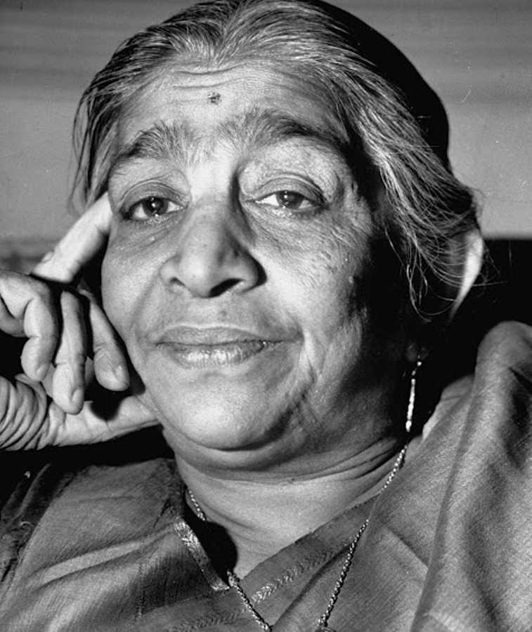

Biography of sarojini naidu
Sarojini Naidu, often referred to as the "Nightingale of India," was a multifaceted personality, a poet of immense repute, and a distinguished freedom fighter. Born on February 13, 1879, in Hyderabad, she played a pivotal role in India's struggle for independence.
Naidu's poetic brilliance shone brightly from a young age, earning her recognition as a gifted poetess. Her verses captured the essence of India's cultural diversity and the aspirations of its people. Her poetry was not just art but a medium to convey the spirit of freedom and unity.
She was a staunch advocate for women's rights, social reforms, and civil liberties. Sarojini Naidu's eloquence and leadership in the suffragette movement were instrumental in advancing the cause of women's empowerment in India.
Sarojini Naidu's involvement in the Indian National Congress and her association with Mahatma Gandhi deepened her commitment to the struggle for independence. Her passionate speeches and persuasive skills made her a prominent figure in the freedom movement.
She became the first woman to become the President of the Indian National Congress and later went on to serve as the first woman governor in independent India, presiding over the United Provinces (now Uttar Pradesh).
Despite her illustrious career in politics and literature, Sarojini Naidu remained humble and devoted to the betterment of her country. Her life was a testament to the power of words and the strength of conviction.
Today, we pay tribute to Sarojini Naidu, a woman of remarkable talent, a champion of women's rights, and a fervent patriot. Her legacy continues to inspire generations, reminding us of the vital role that art, literature, and unwavering determination play in the pursuit of freedom and equality.
"Awake, arise, and dream no more! This is the land of dreams, where Karma Weaves unthreaded garlands with our thoughts Shall we not call her to the field of play?" - Sarojini Naidu